EAT
&
Chill
Welcome to Eat & Chill
Eat & Chill Private Limited is a Non-govt company, incorporated on 29 Jun, 2010. It's a private unlisted company and is classified as'company limited by shares'.
Company's authorized capital stands at Rs 25.0 lakhs and has 60.000004% paid-up capital which is Rs 15.0 lakhs. Eat & Chill Private Limited last annual general meet (AGM) happened on 30 Sep, 2016. The company last updated its financials on 31 Mar, 2016 as per Ministry of Corporate Affairs (MCA).

|
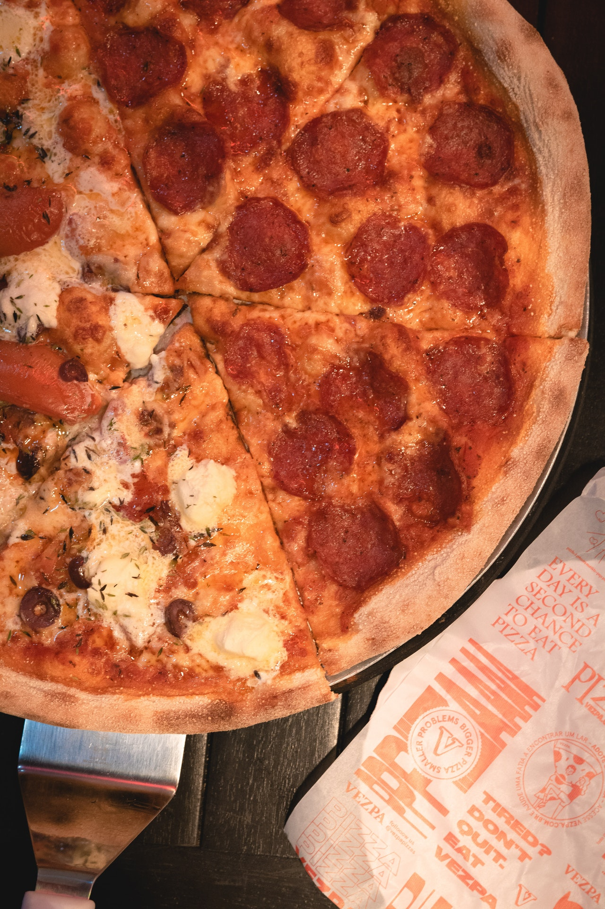
|
| Awsome Ingredients |
Awsome Taste |
Intensify the flavors of meat, poultry and fish with high-heat cooking techniques such as pan-searing, grilling or broiling, which help to brown meat and add flavor. Just don't overcook, burn or char meat
Briyani Collection
Biryani is one of the most popular dishes in South Asia, as well as among the diaspora from the region. It has gained popularity in South India, and is also prepared in other parts of the world such as Iraqi Kurdistan.Biryani is the single most-ordered dish on Indian online food ordering and delivery services
|
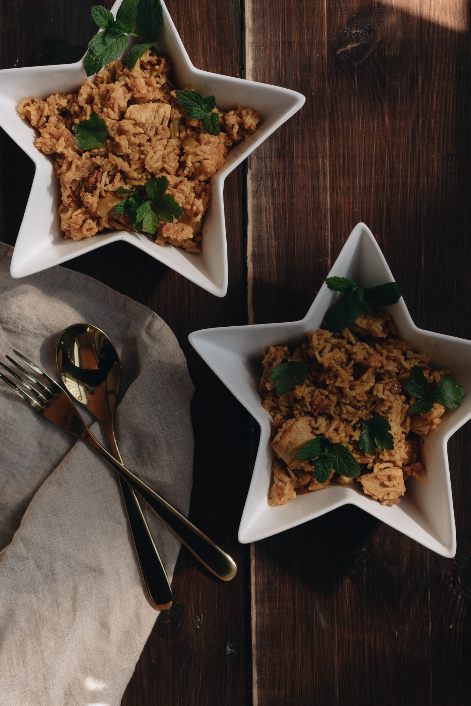
|
|
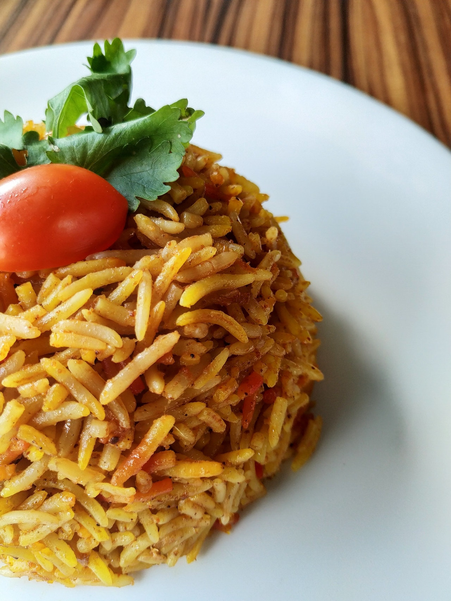 |
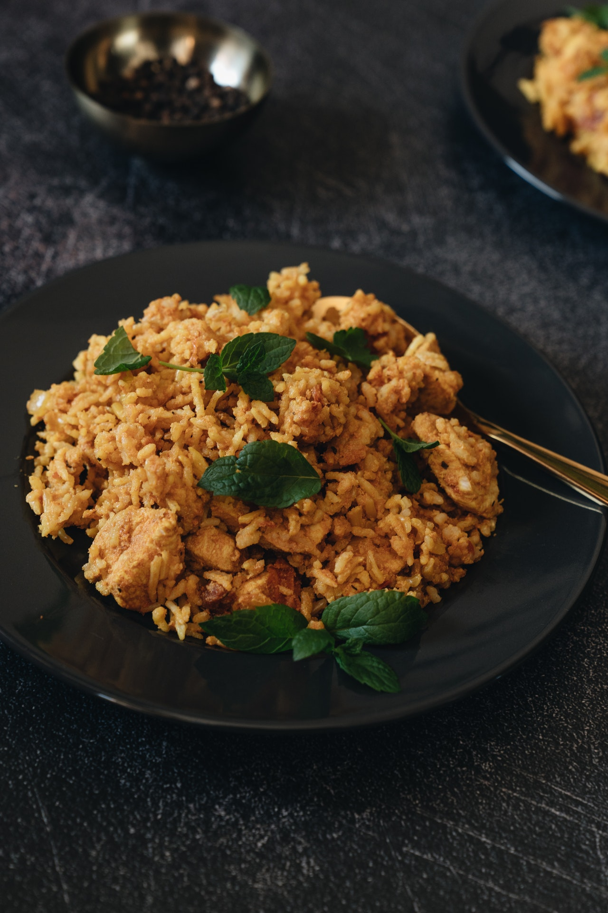 |
| Burger Type1 |
Burger Type2 |
Burger Type3 |
Burger Type4 |
The best burgers offer a combination of tastes and textures – sweet, sour, salt – with a bit of crunch. The patty needs to be juicy, the bun soft but sturdy, and you want the meat/bun/accompaniment ratio to be even from first to last bite.
Pizza Collection
pizza, dish of Italian origin consisting of a flattened disk of bread dough topped with some combination of olive oil, oregano, tomato, olives, mozzarella or other cheese, and many other ingredients, baked quickly—usually, in a commercial setting, using a wood-fired oven heated to a very high temperature—and served hot
|
|
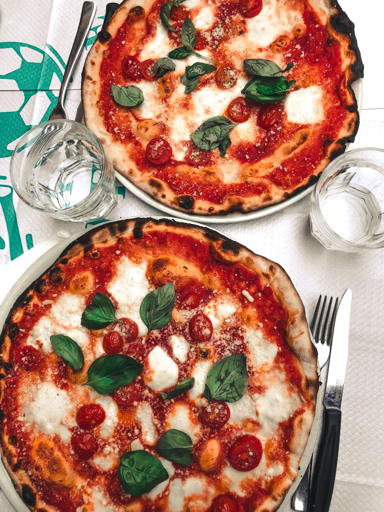
|
 |
 |
| Pizza Type1 |
Pizza Type2 |
Pizza Type3 |
Pizza Type4 |
Your taste buds are the primary factor in what makes pizza special. Along with sweet, salty, sour and bitter, there is a fifth "taste" called umami. Umami was pinpointed by a Japanese chemist who took his observations into a lab and determined exactly what "umami" was and how it affected your taste buds.
sandwich Collection
A sandwich is a food typically consisting of vegetables, sliced cheese or meat, placed on or between slices of bread, or more generally any dish wherein bread serves as a container or wrapper for another food type.
|
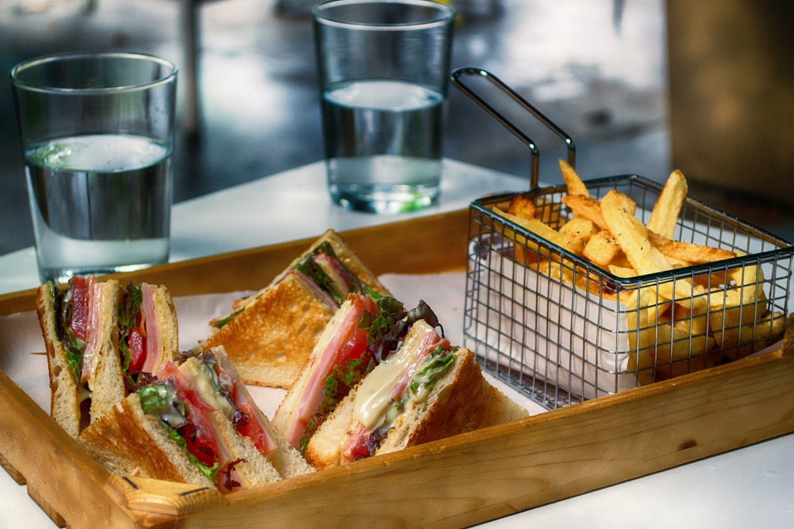
|
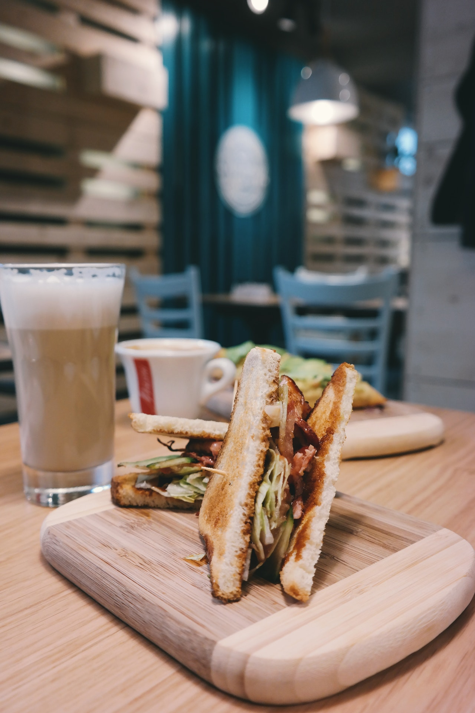
|
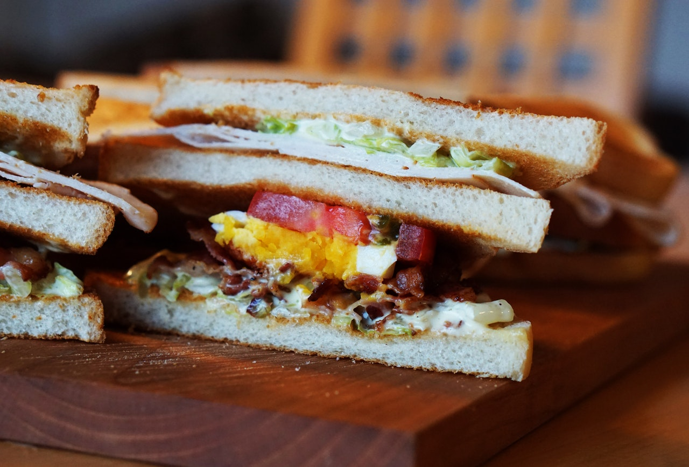 |
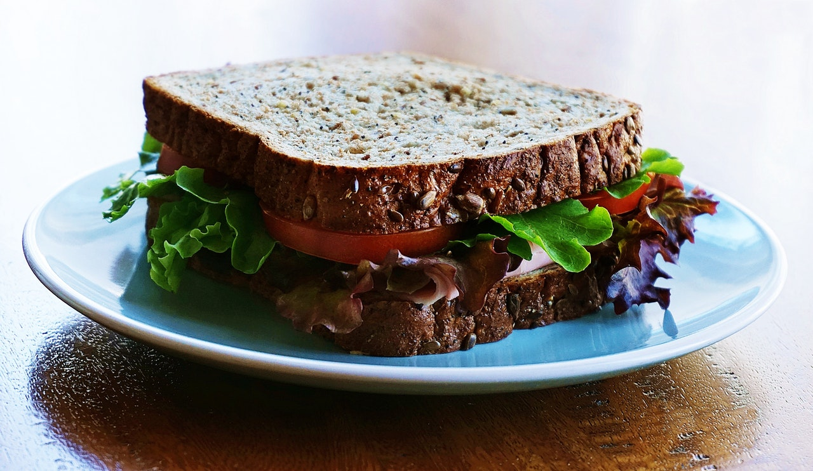 |
| Sandwich Type1 |
Sandwich Type2 |
Sandwich Type3 |
Sandwich Type4 |
"The bread-enclosed convenience food known as the "sandwich" is attributed to John Montagu, fourth Earl of Sandwich (1718-1792), a British statesman and notorious profligate and gambler, who is said to be the inventor of this type of food so that he would not have to leave his gaming table to take supper.
Coffee Collection
Coffee is a brewed drink prepared from roasted coffee beans, the seeds of berries from certain flowering plants in the Coffea genus. From the coffee fruit,
|
|
|
 |
|
| Coffee Type1 |
Coffee Type2 |
Coffee Type3 |
Coffee Type4 |
We believe that coffee is more than just a drink: It’s a culture, an economy, an art, a science — and a passion. Whether you're new to the brew or an espresso expert, whether you prefer it with or without caffeine, there's always more to learn about America's favorite beverage.
Dessert Collection
A dessert is a type of food that is eaten after lunch or dinner, and sometimes after a light meal or snack. It is usually a sweet food, like ice cream, cookies, and cakes. In some countries, cheeses such as Brie cheese and fruit are served as dessert.
|
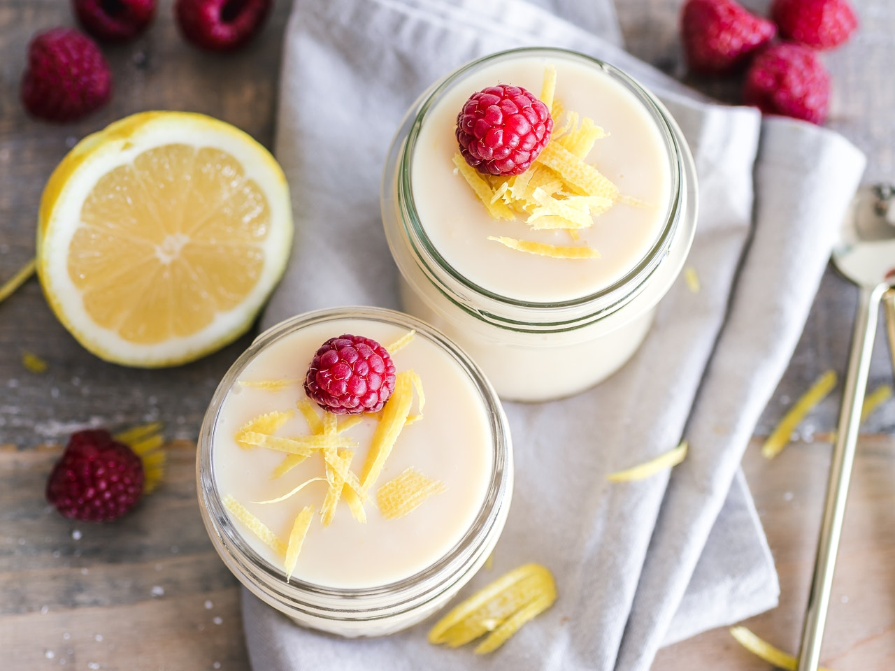
|
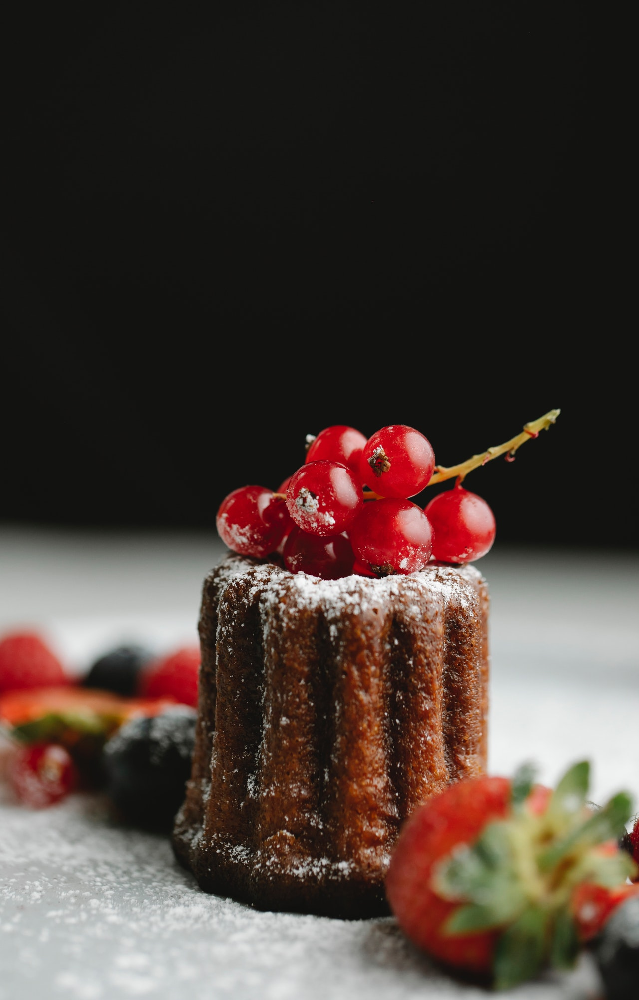
|
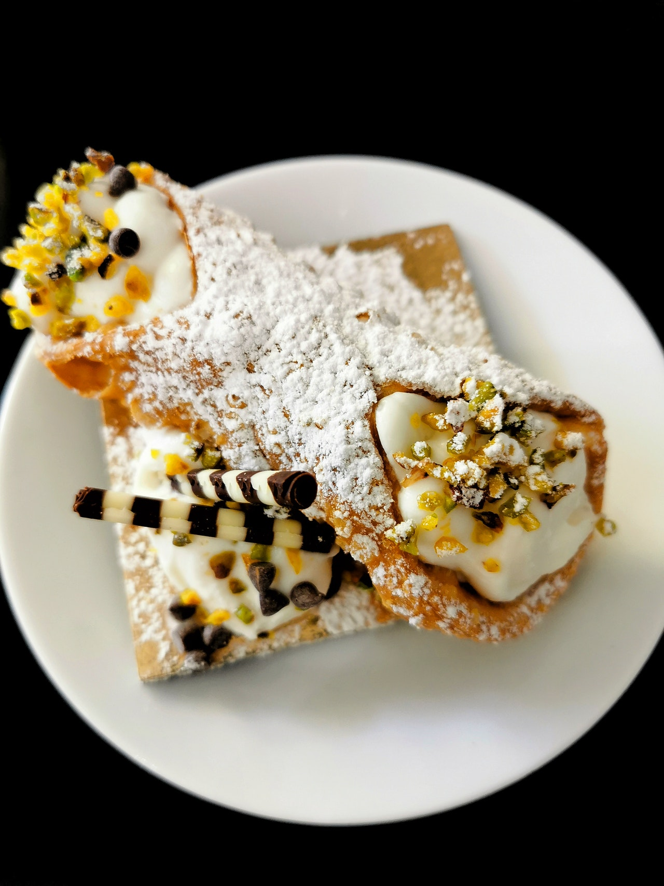 |
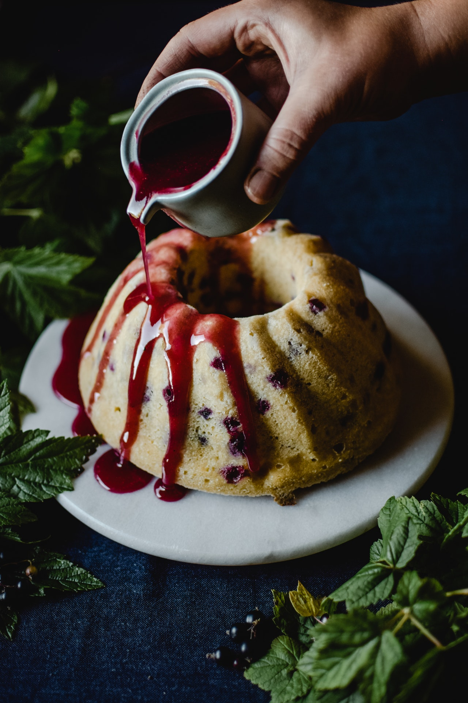 |
| Dessert Type1 |
Dessert Type2 |
Dessert Type3 |
Dessert Type4 |
Dessert is the sweet course eaten at the end of a meal. The term “dessert” can apply to many confections, such as cakes, tarts, cookies, biscuits, gelatins, pastries, ice creams, pies, puddings, custards, and sweet soups. Fruit is also commonly found in dessert courses because of its naturally occurring sweetness.